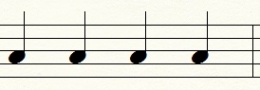
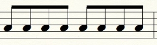
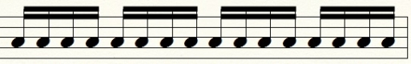
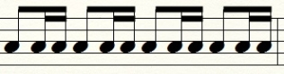
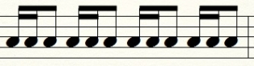
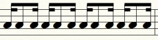
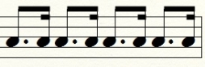
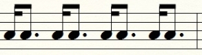
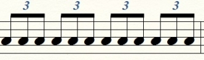

It is possible to mix different note values and combine several rhythmic elements we’ve talked about (dots, ties, rests, etc.), to produce a wide array of rhythmic patterns. It is just a simple matter of arranging the fundamental rhythmic pieces into blocks and mixing them together.
Here are the most common ways you can subdivide a beat and create those rhythmic blocks in the most common 4/4 time. You may recognize these figures often on the staff. Since the beat is usually represented by a quarter note, it will be used to derive other blocks.
(I) Basic subdivision of the beat in 2’s and 4's (shown in one bar in 4/4 time)
1) Quarter notes

Read (or counted) as: one, two, three, four…
When practicing reading these try to tap your foot and/or clap your hands along with the beat to really feel the pattern.
2) Eight notes (subdividing quarter notes into two)

Read as: one and, two and, three and, four and…
3) Sixteenth notes (subdividing eight notes in two, or quarter notes into four)

Read as: one e and a, two e and a, three e and a, four e and a…
4) Mixing 8th notes and 16th to fill out one beat – 3 ways:
a) 8th and two 16th’s

Read as (parenthesis are skipped): one (e) and a, two (e) and a, three (e) and a, four (e) and a…
b) Two 16th’s and an 8th

Read as: one e and (a), two e and (a), three e and (a), four e and (a)…
c) 16th, 8th and a 16th

Read as: one e (and) a, two e (and) a, three e (and) a, four e (and) a…
5) Mixing dotted 8th and 16th notes – 2 ways:
a) Dotted 8th (75% of the beat) and a 16th (25% of the beat)

Read as: one (e) (and) a, two (e) (and) a, three (e) (and) a, four (e) (and) a…
b) 16th and a dotted 8th

Read as: one e (and) (a), two e (and) (a), three e (and) (a), four e (and) (a)…
(II) Subdividing in 3’s – Triplets (spacing out three eight notes evenly in one beat, 4/4 time, one bar)

Read as: one trip let, two trip let, three trip let, four trip let…
Or in another way: one e a, two e a, three e a, four e a…
These were the basic rhythm figures that can be combined in one or more bars to create different rhythmic phrases (strumming patterns on guitar for instance). So far we haven’t even touched on the syncopated rhythms. With the use of syncopation (skipping or missing the beats and playing in-between them) these basic rhythms can be expanded into a staggering array of new syncopated rhythms. This is done simply by incorporating different rests into the rhythmic figures shown so far.